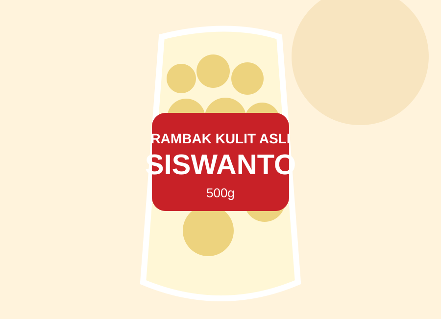
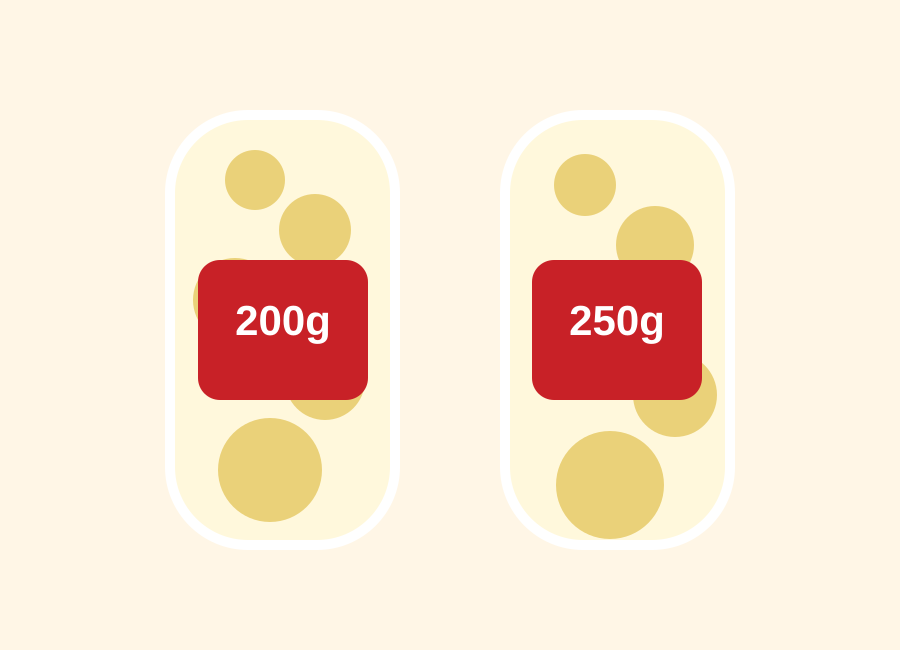
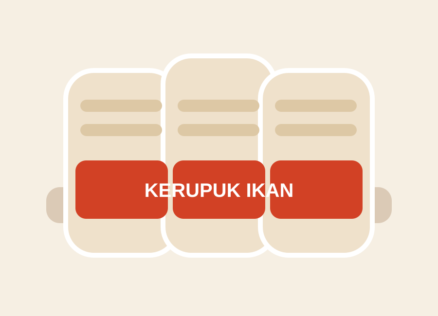

Rambak Kulit Sapi 200g
Varian praktis untuk pembelian online dan oleh-oleh.
Rambak Kulit Asli • Kartasura
Etalase resmi untuk mengenal cerita usaha, melihat katalog produk, dan memilih kanal pembelian yang aman melalui Shopee, Tokopedia, atau WhatsApp owner.
Lihat KatalogBaca Cerita UsahaWhatsApp
Tentang Kami
Dimulai dari kedekatan dengan dunia kulit, usaha ini melewati fase perubahan sampai akhirnya berfokus pada produk pangan berbasis kulit. Dari bahan masuk, penggorengan, pemeriksaan hasil, pengemasan, sampai distribusi, kualitas produk dijaga agar pelanggan menerima rambak yang layak, renyah, dan sesuai harapan.
Produk utama diarahkan ke marketplace resmi. Harga, promo, stok, dan rating mengikuti Shopee atau Tokopedia.

Varian praktis untuk pembelian online dan oleh-oleh.

Produk untuk kebutuhan masak dan pelanggan rumah tangga.

Kerupuk kotak/tahu ukuran praktis untuk camilan harian.
Produk retail diarahkan ke Shopee dan Tokopedia resmi.
Untuk reseller, toko, rumah makan, event, dan kebutuhan jumlah besar.
Pertanyaan produk dan pemesanan besar diarahkan ke WhatsApp owner.